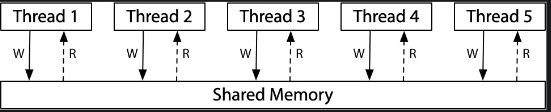

并发¶
约 3649 个字 793 行代码 预计阅读时间 22 分钟
Lecture 5 多处理器编程¶
Take-away Messages
在简化多线程的模型中，并发程序就是 “状态机的集合”，每一步选一个状态机执行一步。然而，真实的系统却因为 “编译器” 的无处不在，使共享内存并发的行为十分复杂。
不幸的是，人类本质上是物理世界 (宏观时间) 中的 “sequential creature”，因此我们在编程时，我们的直觉也只习惯于单线程的顺序/选择/循环结构，真实多处理器上的并发编程是非常具有挑战性的 “底层技术”。在后续的课程中，我们将会提出若干并发控制技术，使得我们可以在需要的时候避免并发的发生，使并发程序退回到顺序程序，从而使我们能够理解和控制并发。
- 简化的线程 API (thread.h)
create(fn)- 创建一个入口函数是
fn的线程，并立即开始执行void fn(int tid) { ... }- 参数
tid从 1 开始编号
- 行为：
sys_spawn(fn, tid)
- 创建一个入口函数是
join()- 等待所有运行线程的返回 (也可以不调用)
- 行为：
while (done != T) sys_sched()
-
hello.c交替打印 a 和 b
C top -d 0.5: 查看进程的 CPU 占用率，可以看到 CPU 使用率近乎 200%，说明两个线程几乎同时运行。操作系统会自动把线程放置在不同的处理器上，以提高效率。 -
T_a 和 T_b 真的共享内存吗？→ memory.c
-
如何证明线程具有独立堆栈 (以及确定堆栈的范围)？→ stack.c
程序输出：
8177KB最接近8192KB，也就是说线程库默认提供的stack大小是8MB，这个大小足以够一般的程序使用了。 -
对于并发编程，要舍弃一些我们之前对单线程顺序程序的理解:
- 状态迁移原子性的假设: 共享内存推翻了 “原子性” 假设
- 任何时候，load 读到的值都可能是别的线程写入的
- 我们习以为常的简化会漏掉并发程序可能的行为
- 程序顺序执行的假设: 编译器会试图优化状态迁移，改变执行流
- 存在全局指令执行顺序的假设: 不同处理器可能看到不同的共享内存, “一个共享内存” 只是个简化的幻觉。由于动态指令调度和缓存的共同作用，实际程序的运行结果更可能超出我们的预期。
- 状态迁移原子性的假设: 共享内存推翻了 “原子性” 假设
-
状态迁移原子性的假设: alipay.c
在usleep(1)的情况下输出是
balance = 18446744073709551516，两个线程同时满足balance >= amt，相当于减了两次100。 -
以下代码 sum 的最小值是2的情况：该线程执行到最后一个for循环时，load到的sum为1（注意不可能load到sum为0，因为对于本线程而言已经执行过两个for循环了，如果是load本线程的sum应当是2，一定是load别的线程改写后的sum。别的线程一定要至少执行过一次load-store把sum写进去，所以此时别的线程里sum最小为1），然后接着其他线程都执行完所有循环结束了。该线程继续执行完剩下的
t += 1; store(sum, t);导致最后sum为2。 -
sum.c：
不同的编译优化输出不一样：
-
-O0输出
sum = 119137703 2*n = 200000000 -
-O1输出
sum = 100000000 2*n = 200000000 -
-O2输出
sum = 200000000 2*n = 200000000，即便如此，直接变成一条addq指令，sum的输出仍旧不一定正确！如同alipay的例子一样如果加入usleep(1)还是可以看到每次结果都不一样。
-
-
memory model:
- 你以为的共享内存: 
- 实际的共享内存: 每个线程都有自己的内存副本，他们之间通过某种方式同步
- x86：市面 “最强” 内存模型 (类比 ARM/RISC-V)

mem_model.c:
./mem-model | head -n 10000 | sort | uniq -c输出：T_1 T_2 ① x = 1
② load y③ y = 1
④ load x出现0 0的原因是真正的memory model和我们想象的并不一样。处理器也是编译器:
- 预取状态机执行的若干步，然后像编译器一样优化
- Load(x); Store(y)
- x ≠ y → 两条指令执行的先后顺序就无所谓
- Load cache miss → store 可以直接执行
Lecture 6 并发控制：互斥 (1)¶
Take-away Messages
并发编程 “很难”：想要完全理解并发程序的行为，是非常困难的——我们甚至可以利用一个 “万能” 的调度器去帮助我们求解 NP-完全问题。因此，人类应对这种复杂性的方法就是退回到不并发。通过互斥实现 stop/resume the world，我们就可以使并发程序的执行变得更容易理解——而只要程序中 “能并行” 的部分足够多，串行化一小部分也并不会对性能带来致命的影响。
- 实现互斥：Stop the World。能否使当前程序状态机独占计算机系统？
- 单处理器系统中 “其他任何事”：仅有中断，因此关中断即可。例如x86中
cli清除eflags中的IFbit即可关中断。注意：只有操作系统内核可以关中断，用户程序关中断会Segmentation fault。 - 但是注意处理器有不可屏蔽中断 NMI (Non-Maskable Interrupts)，可以利用 NMI 实现错误监控
- 设置硬件定时触发
- 操作系统定时复位定时器
- 触发 timeout，执行 NMI 处理程序，例如重启计算机
- 而且单处理器系统关中断可以，多处理器系统不行
- 每个处理器有独立的寄存器组
- 中断是每个处理器内部状态
- 单处理器系统中 “其他任何事”：仅有中断，因此关中断即可。例如x86中
- Peterson 算法：厕所是临界资源，需要互斥使用。（注意Peterson 算法仅仅能解决两个线程互斥的情况）
- 若希望进入厕所，按顺序执行以下操作：
- 举起自己的旗子 (store)
- 把写有对方名字的字条贴在厕所门上 (store; 覆盖)（看起来是谦让，实际上是利己）
- 然后进入持续的观察模式：
- 观察对方是否举旗 (load)
- 观察厕所门上的名字 (load)
- 对方不举旗或厕所门上的名字是自己，进入厕所，否则继续观察
- 出厕所后，放下自己的旗子
- 不用管门上的字条
- 若希望进入厕所，按顺序执行以下操作：
-
Peterson 算法进入临界区的情况
- 如果只有一个人举旗，他就可以直接进入
- 如果两个人同时举旗，由厕所门上的标签决定谁进
- 手快有(被另一个人的标签覆盖)、手慢无
代码实现：（仅为模型算法，并非正确的实现，因为模型的假设：Atomic load & store，但这个假设在现代多处理器上并不成立，除非使用内存屏障 Memory Barrier
__sync_synchronize()(= Compiler Barrier + x86:mfence)） -
Peterson 算法探究，如果有两个线程同时进入临界区，会有cs同时为1/2的情况。通过mosaic model checker
mosaic -c peterson.py | grep \"cs\" | sort | uniq的输出可以看到没有同时为1/2的情况。 -
真正正确的perterson算法实现：
-
在多处理器上实现互斥: 软件不够，硬件来凑, 硬件提供原子指令 - 前缀
lock- 原子指令：一小段时间的 “Stop the World” 执行
- 不可打断的 load + 计算 + store
- x86: Bus Lock; RISC-V: LR/SC (来自 MIPS) + atomic
- 在多处理器上实现正确的 1 + 1：
asm volatile("lock addq $1, %0" : "+m"(sum));orasm volatile("lock incq %0" : "+m"(sum));
-
通过硬件原子指令
atomic_xchgorlock cmpxchgl实现自旋锁：C sum-locked.c得到正确的求和sum:
然而，在用户态实现自旋锁有个问题：一个核占用了这个lock后，假设中断来了切换到了其他核心上的线程，也想拥有这把lock，由于之前的lock没有被释放，其他核心上的线程就会一直自旋等待，浪费资源。另一种情况是，假设中断到来，中断处理程序本身也想访问这个lock保护的内容，然而因为lock没有被释放，中断处理程序会一直等待，陷入死锁。实际上操作系统内核态的自旋锁实现时会关中断。
-
上述代码里
unlock()里需要compiler barrierasm volatile("" ::: "memory");的原因：- 从循环 10 次改成循环 1 次，sum 错了！
- 防止编译器做优化，否则编译器在编译的时候，直接把
unlock()代码复制到到sum++之后，可能的优化是，先做释放锁，再做sum++，就会有问题。
错误代码：
编译后：正确代码：
编译后：
Lecture 7 并发控制：互斥 (2)¶
Take-away Messages
“互斥” 看起来简单，用自旋锁就能实现，但如果在实际的场景 (例如可被中断的操作系统内核、不希望浪费 CPU 资源的应用程序等)，实际的互斥实现就不再简单。我们在 xv6 的自旋锁实现中，发现了许多 “防御性编程” 的例子，先假设程序员可能会犯一切可能的错误——然后不断加以检查。而 “正确性完全由开发者负责” 的时代将要过去，我们将会在未来越来越多地看到编程语言中的机制，帮助我们写出正确的代码。
-
操作系统内核中的自旋锁实现：利用计算机系统状态机的视角，操作系统内核中的自旋锁不仅要实现处理器间的互斥，还要正确处理中断，以及锁的嵌套。当多个需求叠加时，作出一个正确的实现就不再显然。
-
自旋的后果: 同一份计算任务，时间 (CPU cycles) 和空间 (内存占用) 会随处理器数量的增长而变化。用自旋锁实现 sum++: 更多的处理器, 更差的性能（因为其他cpu都在空转，cpu利用率下降了）。也就是说，自旋锁的scalability很差，并不是线性变化的。

一个非常聪明的想法：Read-copy-update
C 利用操作系统内核对象具有 “read-mostly” 的特点（也就是读写不对称，修改不频繁，但读却很频繁），可以在读的时候不上锁，只有写的时候上锁，而且写的时候是在自己的副本上写，然后再把指针指向自己的副本。这样做牺牲了读写一致性，有的线程也许会读到旧的版本，但我们认为这是可以接受的。旧版本对象会存在一个 “graceful period”，直到某个时刻，所有 CPU read 都会访问到新版本。这样大多数读的情况没必要使用自旋锁，减少其他 CPU 空转的时间从而提高 CPU 利用率。
读写不对称的例子：Linux用户和组信息
- 无时不刻在检查 (Permission Denied)
- 但几乎从不修改用户
-
应用程序中的互斥: 应用程序如何较好地使用自旋锁？
- 性能问题 (1)：除了进入临界区的线程，其他处理器上的线程都在空转
- 争抢锁的处理器越多，利用率越低
- 如果临界区较长，不如把处理器让给其他线程
- 性能问题 (2)：应用程序不能关中断
- 持有自旋锁的线程被切换
- 导致 100% 的资源浪费
- (如果应用程序能 “告诉” 操作系统就好了)
解决：通过
syscall把锁的实现放到操作系统里就好啦syscall(SYSCALL_lock, &lk);- 试图获得
lk，但如果失败，就切换到其他线程
- 试图获得
syscall(SYSCALL_unlock, &lk);- 释放
lk，如果有等待锁的线程就唤醒
- 释放
C - 性能问题 (1)：除了进入临界区的线程，其他处理器上的线程都在空转
-
进阶的Futex: Fast Userspace muTexes
- Fast Path: 自旋一次。无人争抢时，无需动用
syscall，直接进临界区- 一条原子指令，成功直接进入临界区
- Slow Path: 自旋失败。有人争抢时，才需要用到
syscall- 请求系统调用
futex_wait
- 请求系统调用
- Fast Path: 自旋一次。无人争抢时，无需动用
Lecture 8 调试理论与实践¶
- 需求 → 设计 → 代码 (Fault/bug) → 执行 (Error) → 失败 (Failure)
Lecture 9 并发控制：同步 (1)¶
Take-away Messages
同步的本质是线程需要等待某件它所预期的事件发生，而事件的发生总是可以用条件 (例如 depth 满足某个条件，或是程序处于某个特定的状态) 来表达。因此计算机系统的设计者实现了条件变量，将条件检查和临界区 “放在一起”，以实现线程间的同步。
-
Synchronization 同步：控制并发，使得 “两个或两个以上随时间变化的量在变化过程中保持一定的相对关系”。例子：
- 演奏音乐中的同步
- 每个乐手都是一个 “线程”
- 节拍 i 到达 → 演奏 ni
- 你与室友约定在23:59:59在学活门口相见
- 相当于世界线的收束，此前线程都各自执行，但是在某个时间节点时需要同步，然后再各自执行。在某个瞬间达到 “互相已知” 的状态，“先到先等”，在条件达成的瞬间再次恢复并行
- 演奏音乐中的同步
-
经典同步问题：生产者-消费者问题
- Producer 和 Consumer 共享一个缓冲区
- Producer (生产数据)： 如果缓冲区有空位，放入；否则等待
- Consumer (消费数据)：如果缓冲区有数据，取走；否则等待
例子：
- 生产 = 打印左括号 (push into buffer)
- 消费 = 打印右括号 (pop from buffer)
- 在
printf前后增加代码，使得打印的括号序列满足- 一定是某个合法括号序列的前缀
- 括号嵌套的深度不超过 n
- n = 3,
((())())(((合法 - n=3,
(((()))), (()))不合法
- n = 3,
- Producer 和 Consumer 共享一个缓冲区
-
“万能” 的同步方法：条件变量（条件不满足时等待，条件满足时唤醒）
C 条件变量的正确打开方式：
- 使用 while 循环和 broadcast
- 总是在唤醒后再次检查同步条件
- 总是唤醒所有潜在可能被唤醒的人
- 在解决同步问题时，关键在于理解 “同步成功” 的条件是什么。
- 使用 while 循环和 broadcast
-
同步机制的应用
- 有三种线程
Ta若干：死循环打印<Tb若干：死循环打印>Tc若干：死循环打印_
- 任务：
- 对线程同步，使得屏幕打印出
<><_和><>_的组合
- 对线程同步，使得屏幕打印出
同步成功"的条件是什么
使用条件变量，只要回答三个问题：打印
<的条件？打印>的条件？打印_的条件？利用状态机视角来解决：
- 有三种线程